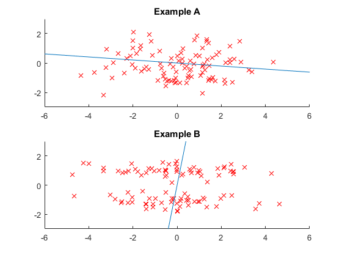

Example 13.2 Locality Preserving Projections
- Result in book : Figure 13.9
- Code in book : Figure 13.10
- Output : eg13_2.png
- Usage : eg13_2(), eg13_2(100)
Contents
Source Code
function eg13_2(n)
rng(0, 'v5uniform'); rng(0, 'v5normal');
if nargin < 1
n = 100;
end
figure('Name', 'Locality Preserving Projections Example');
x = [2 * randn(n, 1), randn(n, 1)];
[X, t] = lpp_( x );
subplot(2, 1, 1); hold on; title('Example A');
axis([-6, 6, -3, 3]);
plot(x(:, 1), x(:, 2), 'rx');
plot(9 * [-t(1) t(1)], 9 * [-t(2) t(2)]);
x = [2 * randn(n, 1), 2 * round(rand(n, 1)) - 1 + randn(n, 1) / 3];
[X, t] = lpp_( x );
subplot(2, 1, 2); hold on; title('Example B');
axis([-6, 6, -3, 3])
plot(x(:, 1), x(:, 2), 'rx');
plot(9 * [-t(1) t(1)], 9 * [-t(2) t(2)]);
saveas(gcf, 'eg13_2', 'png');
function [X, t] = lpp_( x )
x = x - repmat(mean(x), [n, 1]);
x2 = sum(x .^ 2, 2);
W = exp( - (repmat(x2, 1, n) + repmat(x2', n, 1) - 2 * x * x'));
D = diag(sum(W, 2));
L = D - W;
z = x' * D * x;
z = (z + z')/2;
[t, v] = eigs(x' * L * x, z, 1, 'sm');
X = x * (t * t');
end
end
